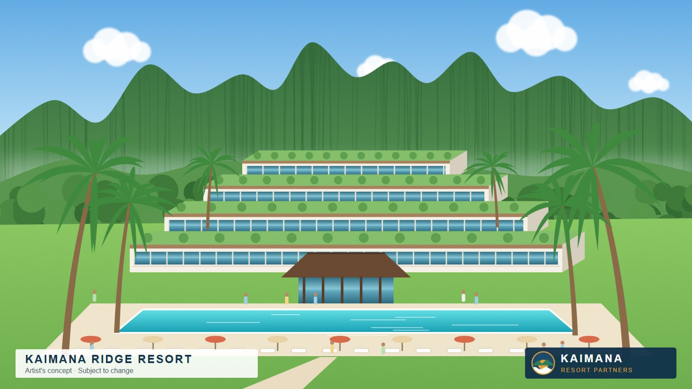

Kaimana Resort Partners pledges $2M community fund
The developer says the fund will support youth programs, shoreline cleanups, and small-business grants on the Windward side.

Kaimana Resort Partners LLC announced Friday that it will create a $2 million Windward Community Fund if its Kahana Ridge project moves forward.
"We are not visitors. We are partners," said managing partner Grant Ashford. "This fund belongs to the community, and the community will decide how it is spent."
The fund would support youth sports and robotics programs, quarterly shoreline cleanups, and grants of up to $10,000 for Windward small businesses, the company said.
The resort, planned for 900 acres on Kahana Ridge, would include 240 rooms, a cultural center, and a bypass road the company has pledged to build at its own cost. The project cannot proceed if Measure 7, the proposed conservation easement, is approved at the county's October 14 hearing.
"A real partner shows up before it is asked," Ashford said. "That is what this fund is."
For more information: KRP Communications, 1188 Kalākaua Commerce Center, Suite 410, press@krpcomms.example.
Reader comments (0)